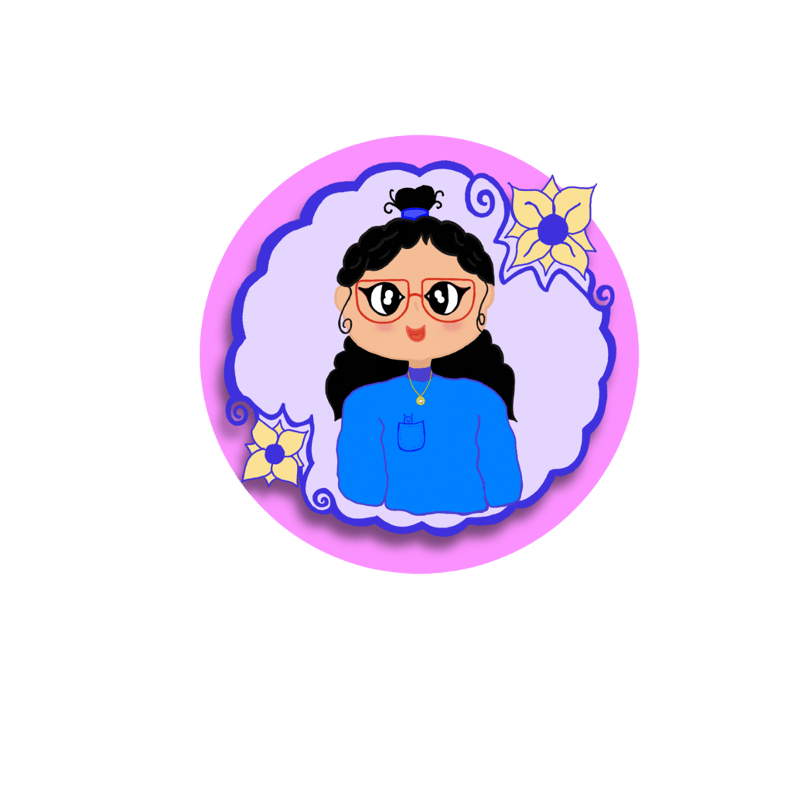

Estudiante de Ingeniería en Diseño Multimedio apasionada por dar vida a ideas a través del arte digital. Actualmente, me encuentro en una etapa de exploración constante, donde veo cada error como una oportunidad para aprender y mejorer. Mi enfoque principal es la iluctración digital y el modelado 3D, aunque siempre estoy abierta a experimentar con nuevas técnicas y herramientas. Mi objetivo es seguir creciendo como artista y compartir mi trabajo con los demás, inspirando a otras personas a seguir sus pasiones creativas. ¡Bienvenido a mi mundo!
📍 Ciudad del Carmen, Campeche, México
✉️ fernandaeuan28@gmail.com
Universidad Autónoma del Carmen
2024 - Presente
Enfoque en creación de contenido digital y modelado 3D.
CECyTEC
2021 - 2024
Otras: ibisPaint, Canva.
Estudiante en proceso de formación en Ingeniería en Diseño Multimedio. Apasionada por el arte digital y el modelado 3D.